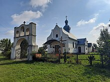
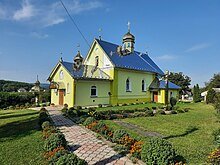

Село Дуліби розташоване в південно-східній частині Тернопільської області, на лівому березі річки Стрипа, неподалік межиріччя Дністра та Стрипи. Воно межує з селами Жнибороди, Новосілка та Скоморохи, а західні околиці села прилягають до лісу. Перша письмова згадка про Дуліби датується 1379 роком, коли в фундаційній грамоті власника Бучача Міхала Авданця серед свідків фігурує Мільцішконе з Дулібів. Назву села пов'язують зі слов'янським племенем дулібів, які, за переказами, брали участь у походах київських князів на Візантію та споруджували переправи через Дністер
Ось декілька картинок про це село
- 
- 